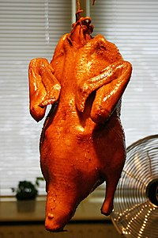

烤乳豬
北京烤鴨
小籠包
心得分享

[全文分享] 由於北京烤鴨其肥瘦分明，鮮嫩適度，成為元、明、清歷代宮廷御膳珍品。
北京烤鴨是在南京燒鴨的基礎上發展而來，烤鴨的前身是出現在南北朝時期的「炙鴨」，在當時是宮廷食品。
北京古代附近小河冬雪無鴨，但烤鴨是明成祖的宮廷菜，據說太祖在南京分烤鴨菜給眾子女吃，成祖懷念兒時在南京餐桌和樂，故帶至北京宮廷。當時烤鴨在北京地區被稱為「南爐鴨」
意即南方傳入的爐火烤鴨；但後來北京烤鴨也逐漸融入了魯菜的元素，如荷葉餅和蔥絲。
首頁
烤乳豬
小籠包
心得分享